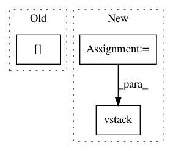

4dc651fc54fa2cbc4d6fef2b3d853e738b9685b6,gpflow/transforms.py,LowerTriangular,backward,#LowerTriangular#Any#,372
Before Change
N = int(np.sqrt(y.size / self.num_matrices))
reshaped = np.reshape(y, (N, N, self.num_matrices))
size = len(reshaped)
triangular = reshaped[np.tril_indices(size, 0)].T
return triangular
def forward_tensor(self, x):
After Change
N = int(np.sqrt(y.size / self.num_matrices))
reshaped = np.reshape(y, (self.num_matrices, N, N))
// return reshaped[np.tril_indices(N, 0)].T
return np.vstack([reshaped[i, :, :][np.tril_indices(N, 0)] for i in range(len(reshaped))])
def forward_tensor(self, x):
reshaped = tf.reshape(x, (self.num_matrices, -1))
fwd = vec_to_tri(reshaped, self.N)
In pattern: SUPERPATTERN
Frequency: 3
Non-data size: 3
Instances
Project Name: GPflow/GPflow
Commit Name: 4dc651fc54fa2cbc4d6fef2b3d853e738b9685b6
Time: 2018-01-05
Author: mv310@cam.ac.uk
File Name: gpflow/transforms.py
Class Name: LowerTriangular
Method Name: backward
Project Name: keras-team/keras
Commit Name: f3f9e020119736920b5bf3adc91fd658e1910775
Time: 2018-01-12
Author: ozabluda@gmail.com
File Name: examples/mnist_denoising_autoencoder.py
Class Name:
Method Name:
Project Name: GPflow/GPflow
Commit Name: 5809cb0b339612434f4f332a91a2cd3e4570c34d
Time: 2018-02-26
Author: james@prowler.io
File Name: gpflow/transforms.py
Class Name: LowerTriangular
Method Name: backward